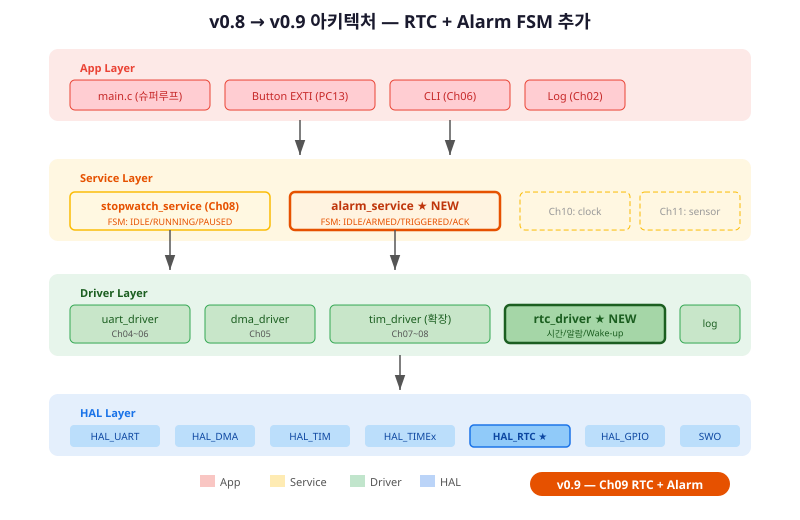
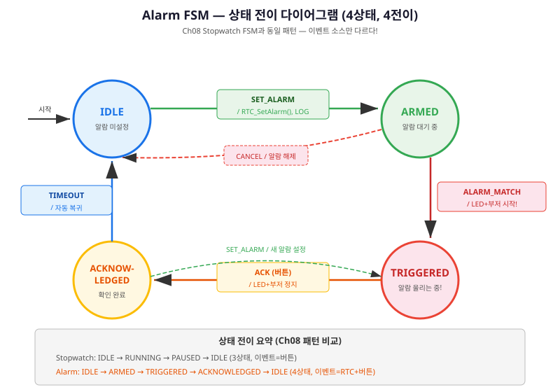
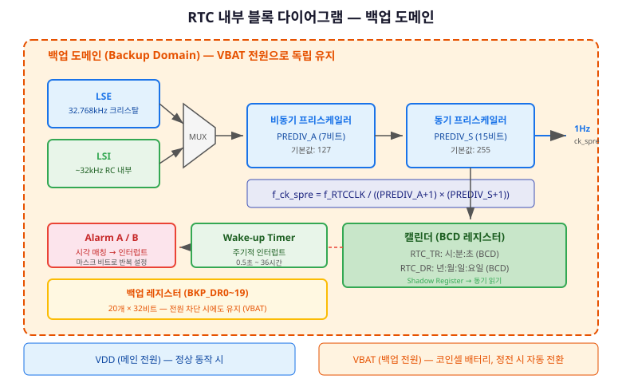
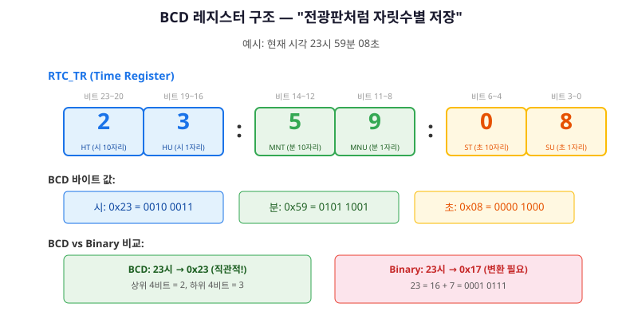
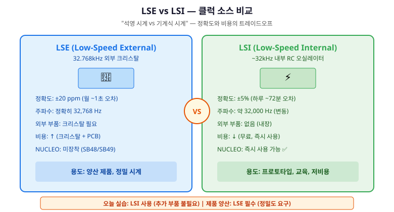
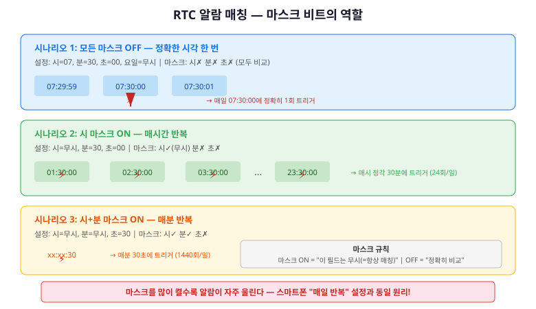
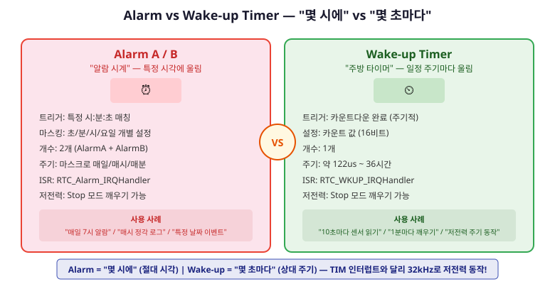
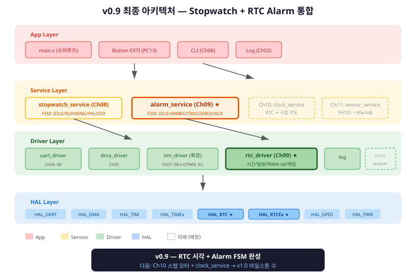

경과 시간(스톱워치)을 넘어 "지금 몇 시인가" — 실시간 시계와 알람 FSM으로 스마트 시계의 심장을 완성한다
여기까지의 여정을 돌아봅시다. Ch08에서 Stopwatch FSM을 완성하고, Service 레이어를 처음 구현했습니다. 버튼을 누르면 IDLE → RUNNING → PAUSED → IDLE. v0.8의 stopwatch_service — 여러분이 직접 설계한 첫 FSM 서비스입니다.
그런데 한 가지 근본적인 한계가 있습니다. 스톱워치는 "얼마나 지났나"(경과 시간, elapsed time)만 알 수 있습니다. "지금 몇 시인지"는 모릅니다. 핸드폰으로 비유하면, 타이머 앱은 있는데 시계 앱이 없는 셈입니다. 진짜 스마트 시계를 만들려면 "지금 몇 시인가"(절대 시각, wall-clock time)를 알아야 합니다.
이 챕터가 끝나면:
특히 중요한 것은 패턴의 반복입니다. Ch08에서 FSM을 처음 구현했다면, 이 챕터에서 두 번째로 동일한 패턴을 적용합니다. "이 구조, 전에 봤는데?" — 그 느낌이 들면 성공입니다. FSM 패턴이 체화되기 시작했다는 뜻입니다.
Ch09는 두 가지 컴포넌트를 추가합니다:
① Driver 레이어에 rtc_driver 신규 추가,
② Service 레이어에 alarm_service 신규 추가.
Ch08의 stopwatch_service는 그대로 유지됩니다 — 교체가 아닌 병렬 추가입니다.

Ch09에서 추가되는 API입니다. rtc_driver(Driver)와 alarm_service(Service), 두 부분입니다.
/* rtc_driver.h — Driver 레이어 공개 API */
/* 시간/날짜 읽기·쓰기 */
rtc_status_t rtc_get_time(rtc_time_t *time);
rtc_status_t rtc_get_date(rtc_date_t *date);
rtc_status_t rtc_set_time(const rtc_time_t *time);
rtc_status_t rtc_set_date(const rtc_date_t *date);
/* 알람 */
rtc_status_t rtc_set_alarm_a(const rtc_time_t *time, uint32_t mask);
rtc_status_t rtc_deactivate_alarm_a(void);
void rtc_register_alarm_callback(rtc_alarm_callback_t cb);
/* Wake-up 타이머 */
rtc_status_t rtc_set_wakeup(uint16_t seconds);
rtc_status_t rtc_stop_wakeup(void);
/* alarm_service.h — Service 레이어 공개 API */
void alarm_service_init(void);
void alarm_service_handle_event(alarm_event_t evt);
void alarm_service_process(void);
alarm_state_t alarm_service_get_state(void);
void alarm_service_set_time(uint8_t h, uint8_t m, uint8_t s);

이 챕터를 완료하면 다음을 할 수 있습니다.
RTC는 Real-Time Clock(실시간 시계)의 약자입니다. 이름에 "Real-Time"이 있지만, RTOS의 "Real-Time"과는 완전히 다른 의미입니다. RTC의 Real-Time은 "실제 시각(wall-clock time)" — 사람이 사용하는 시:분:초, 년:월:일을 뜻합니다. RTOS의 Real-Time은 "시간 제약 보장(deadline guarantee)"입니다. 전혀 다른 개념이니 혼동하지 마세요.
STM32F411의 RTC는 MCU 내부에 있는 독립적인 시계 블록입니다. 세 가지 핵심 특성을 이해하면 됩니다: 백업 도메인, BCD 레지스터, 프리스케일러.
백업 도메인에 포함된 것:

RTC가 왜 BCD를 사용할까요? 두 가지 이유입니다:

BCD ↔ Binary 변환은 간단합니다:
/* BCD → Binary: (상위 니블 × 10) + 하위 니블 */
uint8_t bcd_to_bin(uint8_t bcd) {
return ((bcd >> 4) * 10) + (bcd & 0x0F);
}
/* Binary → BCD: (십의 자리 << 4) | 일의 자리 */
uint8_t bin_to_bcd(uint8_t bin) {
return ((bin / 10) << 4) | (bin % 10);
}
/* 실무에서는 HAL 매크로 사용: */
/* RTC_ByteToBcd2(value), RTC_Bcd2ToByte(value) */
RTC 클럭(LSE 32,768Hz 또는 LSI ~32kHz)을 1초 단위로 만들기 위해 두 단계 분주를 합니다:
결과: 32,768 / (128 × 256) = 1Hz (ck_spre)
Ch07의 TIM에서 PSC/ARR로 주기를 계산한 것과 같은 원리입니다. TIM은 84MHz를 분주했다면, RTC는 32kHz를 분주합니다. 목표 주파수가 다를 뿐, "프리스케일러로 원하는 주기를 만든다"는 개념은 동일합니다.
RTC의 정확도는 클럭 소스에 의해 결정됩니다. STM32F411은 두 가지 저속 클럭을 제공합니다: LSE(외부 크리스탈)와 LSI(내부 RC).

| 항목 | LSE (32.768kHz) | LSI (~32kHz) |
|---|---|---|
| 정확도 | ±20ppm (월 ~1초) | ±5% (하루 ~72분) |
| 주파수 | 정확히 32,768Hz | 약 32,000Hz (변동) |
| 외부 부품 | 크리스탈 필요 | 없음 (내장) |
| NUCLEO 기본 | 미장착 (SB48/SB49 OFF) | 즉시 사용 가능 |
| 실무 판단 | 양산 제품 → 필수 | 프로토타입/교육 → OK |
NUCLEO-F411RE는 기본적으로 LSE 크리스탈이 장착되어 있지 않습니다. 보드 뒷면의 솔더 브릿지 SB48, SB49가 열려 있습니다. LSE를 사용하려면:
오늘 실습에서는 LSI를 사용합니다. 추가 하드웨어가 필요 없고, 교육 목적으로는 충분합니다. 하루 72분 오차가 있지만, 실습 시간(4시간) 동안에는 약 12분 오차 — 동작 확인에 지장 없습니다.
CubeMX에서 RTC를 활성화했다면, 이제 시간을 읽고 써봅시다. 그 전에 중요한 경고가 하나 있습니다.
HAL_RTC_GetTime() 호출 후 반드시 HAL_RTC_GetDate()를 호출해야 합니다!
이것은 RM0383 Reference Manual에 명시된 동작입니다. RTC의 Shadow Register(그림자 레지스터)는 GetTime을 호출하면 잠금(lock)되어 값이 고정됩니다. GetDate를 호출해야 잠금이 해제되어 다음 읽기에서 새로운 값이 갱신됩니다. GetDate를 빠뜨리면 시간이 멈춘 것처럼 보입니다 — 이것은 100% 모든 수강생이 처음에 빠지는 함정입니다. 일부러 경험해 보세요!
/* ch09_02_rtc_get_time.c — 시간 읽기 기본 패턴 */
void rtc_read_time(void)
{
RTC_TimeTypeDef time;
RTC_DateTypeDef date;
/* ⚠️ 반드시 GetTime → GetDate 순서! 쌍으로 호출! */
HAL_RTC_GetTime(&hrtc, &time, RTC_FORMAT_BIN);
HAL_RTC_GetDate(&hrtc, &date, RTC_FORMAT_BIN); /* 생략 금지! */
LOG_I("현재 시각: %02d:%02d:%02d", time.Hours, time.Minutes, time.Seconds);
LOG_D("현재 날짜: 20%02d-%02d-%02d", date.Year, date.Month, date.Date);
}
/* ch09_03_rtc_set_time.c — 시간 설정 */
void rtc_set_time_example(void)
{
RTC_TimeTypeDef time = {0};
time.Hours = 14;
time.Minutes = 30;
time.Seconds = 0;
time.DayLightSaving = RTC_DAYLIGHTSAVING_NONE;
time.StoreOperation = RTC_STOREOPERATION_RESET;
if (HAL_RTC_SetTime(&hrtc, &time, RTC_FORMAT_BIN) != HAL_OK) {
LOG_E("RTC 시간 설정 실패!");
return;
}
RTC_DateTypeDef date = {0};
date.Year = 26; /* 2026년 */
date.Month = RTC_MONTH_MARCH;
date.Date = 17;
date.WeekDay = RTC_WEEKDAY_TUESDAY;
if (HAL_RTC_SetDate(&hrtc, &date, RTC_FORMAT_BIN) != HAL_OK) {
LOG_E("RTC 날짜 설정 실패!");
return;
}
LOG_I("RTC 설정: 14:30:00, 2026-03-17");
}
Ch07에서 tim_driver를 설계할 때 init → start → stop → set 패턴을 사용했습니다.
rtc_driver도 같은 패턴입니다: init → get/set → alarm → wakeup.
Driver는 하드웨어 추상화만 담당하고, 비즈니스 로직(알람 FSM)은 Service 레이어에 둡니다.
/* rtc_driver.h — 공개 인터페이스 (Driver 레이어) */
typedef enum { RTC_OK = 0, RTC_ERROR = 1 } rtc_status_t;
typedef struct {
uint8_t hours, minutes, seconds;
} rtc_time_t;
typedef struct {
uint8_t year, month, date, weekday;
} rtc_date_t;
typedef void (*rtc_alarm_callback_t)(void);
/* 초기화 */
rtc_status_t rtc_driver_init(void);
/* 시간/날짜 */
rtc_status_t rtc_get_time(rtc_time_t *time);
rtc_status_t rtc_set_time(const rtc_time_t *time);
/* 알람 — 상위 레이어(alarm_service)에서 사용 */
rtc_status_t rtc_set_alarm_a(const rtc_time_t *time, uint32_t mask);
rtc_status_t rtc_deactivate_alarm_a(void);
void rtc_register_alarm_callback(rtc_alarm_callback_t cb);
rtc_driver의 구현은 ch09_06_rtc_driver.c에 있습니다.
핵심은 HAL 콜백을 Driver 콜백으로 전달하는 패턴입니다:
/* rtc_driver.c — HAL 콜백 → Driver 콜백 전달 */
static rtc_alarm_callback_t s_alarm_cb = NULL;
void rtc_register_alarm_callback(rtc_alarm_callback_t cb)
{
s_alarm_cb = cb;
LOG_D("알람 콜백 등록");
}
/* HAL이 호출하는 콜백 → 등록된 Service 콜백으로 전달 */
void HAL_RTC_AlarmAEventCallback(RTC_HandleTypeDef *hrtc_cb)
{
if (s_alarm_cb != NULL) {
s_alarm_cb(); /* alarm_service의 콜백 호출 */
}
}
시간을 읽고 쓸 수 있게 되었으니, 이제 특정 시각에 이벤트를 발생시킵시다. 이것이 RTC 알람입니다. 스마트폰의 알람 앱과 정확히 같은 원리입니다 — "7시 30분에 울려!"
STM32F411의 RTC는 AlarmA와 AlarmB, 두 개의 독립 알람을 제공합니다. 각각 시:분:초와 요일/날짜를 비교하여 매칭 시 인터럽트를 발생시킵니다.

| 마스크 설정 | 동작 | 트리거 빈도 |
|---|---|---|
| 모두 OFF | 정확히 해당 시:분:초에만 | 하루 1회 |
| 날짜/요일 마스크 ON | 매일 해당 시:분:초에 | 하루 1회 (매일 반복) |
| 시+날짜 마스크 ON | 매시간 해당 분:초에 | 하루 24회 |
| 시+분+날짜 마스크 ON | 매분 해당 초에 | 하루 1,440회 |
| 모두 ON | 매초마다 | 하루 86,400회 |
/* ch09_04_rtc_alarm_setup.c — AlarmA 설정 */
void rtc_alarm_set_daily(void)
{
RTC_AlarmTypeDef alarm = {0};
alarm.AlarmTime.Hours = 7;
alarm.AlarmTime.Minutes = 30;
alarm.AlarmTime.Seconds = 0;
/* 마스크: 날짜/요일만 마스크 → 매일 07:30:00에 트리거 */
alarm.AlarmMask = RTC_ALARMMASK_DATEWEEKDAY;
alarm.AlarmDateWeekDaySel = RTC_ALARMDATEWEEKDAYSEL_DATE;
alarm.AlarmDateWeekDay = 1; /* 마스크되어 무시됨 */
alarm.Alarm = RTC_ALARM_A;
if (HAL_RTC_SetAlarm_IT(&hrtc, &alarm, RTC_FORMAT_BIN) != HAL_OK) {
LOG_E("AlarmA 설정 실패!");
return;
}
LOG_I("AlarmA 설정: 매일 07:30:00");
}
/* 알람 콜백 — ISR에서는 플래그만! (학습용 단독 예제) */
/* ⚠️ 최종 프로젝트에서는 rtc_driver(§9.6)의 콜백을 사용하세요.
* HAL 콜백은 프로젝트당 하나만 정의 가능합니다.
* ch09_06(rtc_driver) + ch09_07(alarm_service)만 포함하세요. */
static volatile uint8_t alarm_flag = 0;
void HAL_RTC_AlarmAEventCallback(RTC_HandleTypeDef *hrtc_cb)
{
alarm_flag = 1; /* ISR에서는 이것이 전부! */
}
/* main loop에서 처리 */
void alarm_process(void)
{
if (alarm_flag) {
alarm_flag = 0;
LOG_I("*** AlarmA 트리거! ***");
HAL_GPIO_TogglePin(GPIOA, GPIO_PIN_5); /* LED 토글 */
}
}
Ch08에서 배운 패턴 그대로입니다: EXTI 콜백 → 플래그 → main loop가 RTC 콜백 → 플래그 → main loop로 바뀐 것뿐입니다. 이벤트 소스만 바뀌었을 뿐, 처리 구조는 동일합니다.
알람은 "몇 시에" 트리거됩니다. 그런데 "몇 초마다" 주기적으로 트리거가 필요할 때는 어떻게 할까요? TIM 인터럽트를 쓸 수도 있지만, RTC에는 전용 기능이 있습니다 — Wake-up Timer.

"둘 다 주기적 인터럽트인데 뭐가 다른가요?" 핵심 차이는 전력입니다.
| 항목 | TIM 인터럽트 (Ch07) | Wake-up Timer |
|---|---|---|
| 클럭 소스 | APB (84MHz) | RTC (32kHz) |
| Stop 모드 | 동작 불가 (APB 정지) | 동작 가능! |
| 정밀도 | μs 단위 가능 | ms~초 단위 |
| 소비 전류 | 높음 (APB 클럭 필요) | 매우 낮음 (~1μA) |
| 사용처 | PWM, 정밀 타이밍 | 저전력 주기 깨우기 |
/* ch09_05_wakeup_timer.c — 5초 주기 Wake-up */
void rtc_wakeup_start(uint16_t seconds)
{
/* 입력 검증: 0이면 언더플로우 (0 - 1 = 0xFFFF) */
if (seconds == 0) {
LOG_W("Wake-up 주기 0초 — 무시");
return;
}
/* 기존 타이머 해제 */
HAL_RTCEx_DeactivateWakeUpTimer(&hrtc);
/* 1Hz(ck_spre) 기반, seconds초 주기 */
if (HAL_RTCEx_SetWakeUpTimer_IT(
&hrtc,
(uint16_t)(seconds - 1), /* 카운트다운 값 (안전) */
RTC_WAKEUPCLOCK_CK_SPRE_16BITS /* 1초 단위 */
) != HAL_OK) {
LOG_E("Wake-up 타이머 설정 실패!");
return;
}
LOG_I("Wake-up 타이머: %d초 주기", seconds);
}
/* 콜백 — ISR에서는 카운트만! */
void HAL_RTCEx_WakeUpTimerEventCallback(RTC_HandleTypeDef *hrtc_cb)
{
wakeup_count++;
}
백업 도메인에는 20개의 32비트 백업 레지스터(BKP_DR0~19)가 있습니다. VBAT가 유지되는 한 전원을 꺼도, 리셋해도 값이 보존됩니다. 냉장고 메모지처럼 "전원이 꺼져도 붙어있는 메모"입니다.
/* 백업 레지스터 활용: 리셋 횟수 카운터 */
#define RTC_MAGIC_NUMBER 0xA5A5
void rtc_init_with_backup(void)
{
uint32_t magic = HAL_RTCEx_BKUPRead(&hrtc, RTC_BKP_DR0);
if (magic == RTC_MAGIC_NUMBER) {
LOG_I("RTC 이미 설정됨 — 시간 유지");
} else {
LOG_W("RTC 최초 설정 — 시간 초기화");
rtc_set_time_example();
/* 매직 넘버 기록 → 다음 리셋 시 재설정 건너뛰기 */
HAL_RTCEx_BKUPWrite(&hrtc, RTC_BKP_DR0, RTC_MAGIC_NUMBER);
}
/* 리셋 카운터 */
uint32_t count = HAL_RTCEx_BKUPRead(&hrtc, RTC_BKP_DR1);
count++;
HAL_RTCEx_BKUPWrite(&hrtc, RTC_BKP_DR1, count);
LOG_I("리셋 횟수: %lu", count);
}
이 챕터의 핵심 성취 구간에 왔습니다. Ch08에서 Stopwatch FSM을 설계하고 구현했습니다. 이제 동일한 패턴으로 Alarm FSM을 설계합니다. "같은 패턴, 다른 도메인" — FSM의 강점을 체감하는 순간입니다.
Stopwatch FSM: IDLE → RUNNING → PAUSED → IDLE. 3개 상태, 이벤트 소스는 버튼(BTN_SHORT, BTN_LONG).
ISR에서 플래그 세팅 → main loop에서 stopwatch_handle_event() 호출 → switch-case로 전이 처리.
핸드폰 알람 앱의 동작을 관찰해 봅시다: 알람 설정 → 대기 → 시간 되면 울림 → 사용자가 끔. 4개 상태가 필요합니다:
| 상태 | enum 값 | 설명 | LED 상태 |
|---|---|---|---|
| IDLE | ALARM_STATE_IDLE | 알람 미설정 | OFF |
| ARMED | ALARM_STATE_ARMED | 알람 대기 중 | OFF |
| TRIGGERED | ALARM_STATE_TRIGGERED | 알람 울리는 중! | ON (점멸) |
| ACKNOWLEDGED | ALARM_STATE_ACKNOWLEDGED | 사용자 확인 완료 | OFF |
Stopwatch는 3상태, Alarm은 4상태입니다. ACKNOWLEDGED(확인 완료)가 추가되었습니다. "왜 TRIGGERED에서 바로 IDLE로 안 가나요?" — 알람이 울린 사실을 기록하고, 다음 동작(재설정 또는 자동 복귀)을 결정하기 위해서입니다.
| 이벤트 | enum 값 | 발생 소스 |
|---|---|---|
| SET_ALARM | ALARM_EVT_SET_ALARM | 사용자 명령 (CLI/버튼) |
| CANCEL | ALARM_EVT_CANCEL | 사용자 취소 |
| ALARM_MATCH | ALARM_EVT_ALARM_MATCH | RTC HW (ISR → 플래그) |
| ACK | ALARM_EVT_ACK | 버튼 B1 (PC13) |
| TIMEOUT | ALARM_EVT_TIMEOUT | 자동 (30초 경과) |
Stopwatch의 이벤트 소스는 버튼만이었습니다. Alarm의 이벤트 소스는 RTC 하드웨어 + 버튼 + 타임아웃 — 더 다양합니다. 하지만 FSM 구조(switch-case + 전이)는 완전히 동일합니다. 이것이 FSM의 강점: 이벤트 소스가 바뀌어도 FSM 구조는 동일합니다.
| 현재 상태 | 이벤트 | 다음 상태 | 액션 |
|---|---|---|---|
| IDLE | SET_ALARM | ARMED | RTC_SetAlarm(), LOG "알람 설정" |
| ARMED | ALARM_MATCH | TRIGGERED | LED/부저 시작, LOG "알람 발생!" |
| ARMED | CANCEL | IDLE | RTC_DeactivateAlarm(), LOG "알람 취소" |
| TRIGGERED | ACK | ACKNOWLEDGED | LED/부저 정지 |
| TRIGGERED | TIMEOUT | ACKNOWLEDGED | LED/부저 정지 (자동) |
| ACKNOWLEDGED | SET_ALARM | ARMED | 새 알람 설정 |
| ACKNOWLEDGED | TIMEOUT | IDLE | 자동 복귀 |
설계가 완료되었으니 코드로 옮깁시다. Ch08 stopwatch_service.c를 열고, 구조를 복사한 다음, 상태와 이벤트 이름만 바꾸면 됩니다. 이것이 FSM 패턴의 핵심 — 한 번 익히면 어떤 도메인에든 적용 가능합니다.
/* ch09_07_alarm_service.h — Service 레이어 공개 API */
typedef enum {
ALARM_STATE_IDLE = 0, /* 알람 미설정 */
ALARM_STATE_ARMED = 1, /* 알람 대기 중 */
ALARM_STATE_TRIGGERED = 2, /* 알람 울리는 중! */
ALARM_STATE_ACKNOWLEDGED = 3 /* 사용자 확인 완료 */
} alarm_state_t;
typedef enum {
ALARM_EVT_SET_ALARM = 0, /* 알람 설정 요청 */
ALARM_EVT_CANCEL = 1, /* 알람 취소 */
ALARM_EVT_ALARM_MATCH = 2, /* RTC 시각 매칭 (ISR) */
ALARM_EVT_ACK = 3, /* 사용자 확인 (버튼) */
ALARM_EVT_TIMEOUT = 4 /* 자동 타임아웃 */
} alarm_event_t;
void alarm_service_init(void);
void alarm_service_handle_event(alarm_event_t evt);
void alarm_service_process(void);
alarm_state_t alarm_service_get_state(void);
void alarm_service_set_time(uint8_t h, uint8_t m, uint8_t s);
stopwatch_service.h와 비교해 보세요.
sw_state_t → alarm_state_t, sw_event_t → alarm_event_t.
함수 이름도 stopwatch_* → alarm_service_*.
구조가 완전히 동일합니다.
/* ch09_07_alarm_service.c — Alarm FSM 핵심 */
#include "alarm_service.h"
#include "rtc_driver.h"
#include "log.h"
static volatile alarm_state_t s_state = ALARM_STATE_IDLE;
static volatile uint8_t s_alarm_flag = 0;
static rtc_time_t s_alarm_time = {0};
static uint32_t s_trigger_tick = 0;
#define ALARM_ACK_TIMEOUT_MS 30000 /* 30초 후 자동 타임아웃 (TRIGGERED → ACKNOWLEDGED) */
#define ALARM_IDLE_TIMEOUT_MS 2000 /* 2초 후 ACKNOWLEDGED → IDLE 자동 복귀 */
static const char * const STATE_NAMES[] = {
"IDLE", "ARMED", "TRIGGERED", "ACKNOWLEDGED"
};
/* ISR 콜백: 플래그만 설정 (Ch08 패턴 동일!) */
static void alarm_isr_callback(void)
{
s_alarm_flag = 1;
}
void alarm_service_init(void)
{
s_state = ALARM_STATE_IDLE;
s_alarm_flag = 0;
rtc_register_alarm_callback(alarm_isr_callback);
LOG_I("alarm_service 초기화 완료");
}
void alarm_service_handle_event(alarm_event_t evt)
{
alarm_state_t prev = s_state;
switch (s_state) {
case ALARM_STATE_IDLE:
if (evt == ALARM_EVT_SET_ALARM) {
rtc_set_alarm_a(&s_alarm_time, RTC_ALARMMASK_DATEWEEKDAY);
s_state = ALARM_STATE_ARMED;
LOG_I("알람 설정: %02d:%02d:%02d",
s_alarm_time.hours, s_alarm_time.minutes, s_alarm_time.seconds);
}
break;
case ALARM_STATE_ARMED:
if (evt == ALARM_EVT_ALARM_MATCH) {
s_trigger_tick = HAL_GetTick();
HAL_GPIO_WritePin(GPIOA, GPIO_PIN_5, GPIO_PIN_SET);
s_state = ALARM_STATE_TRIGGERED;
LOG_I("*** 알람 울림! ***");
} else if (evt == ALARM_EVT_CANCEL) {
rtc_deactivate_alarm_a();
s_state = ALARM_STATE_IDLE;
LOG_I("알람 취소");
}
break;
case ALARM_STATE_TRIGGERED:
if (evt == ALARM_EVT_ACK || evt == ALARM_EVT_TIMEOUT) {
HAL_GPIO_WritePin(GPIOA, GPIO_PIN_5, GPIO_PIN_RESET);
s_state = ALARM_STATE_ACKNOWLEDGED;
LOG_I("알람 확인 완료");
}
break;
case ALARM_STATE_ACKNOWLEDGED:
if (evt == ALARM_EVT_SET_ALARM) {
rtc_set_alarm_a(&s_alarm_time, RTC_ALARMMASK_DATEWEEKDAY);
s_state = ALARM_STATE_ARMED;
} else if (evt == ALARM_EVT_TIMEOUT) {
s_state = ALARM_STATE_IDLE;
LOG_D("자동 복귀: ACKNOWLEDGED → IDLE");
}
break;
}
if (prev != s_state) {
LOG_D("FSM: %s → %s", STATE_NAMES[prev], STATE_NAMES[s_state]);
}
}
/* main loop에서 매 사이클 호출 */
void alarm_service_process(void)
{
/* ISR 플래그 → FSM 이벤트 */
if (s_alarm_flag) {
s_alarm_flag = 0;
alarm_service_handle_event(ALARM_EVT_ALARM_MATCH);
}
/* TRIGGERED 타임아웃 체크 */
if (s_state == ALARM_STATE_TRIGGERED) {
if ((HAL_GetTick() - s_trigger_tick) > ALARM_ACK_TIMEOUT_MS) {
alarm_service_handle_event(ALARM_EVT_TIMEOUT);
}
}
}
stopwatch_service.c와 1:1 대응되는 구조를 확인하세요:
| Stopwatch (Ch08) | Alarm (Ch09) | 패턴 동일? |
|---|---|---|
| static sw_state_t s_state | static alarm_state_t s_state | 동일 |
| STATE_NAMES[] 배열 | STATE_NAMES[] 배열 | 동일 |
| switch (s_state) + case | switch (s_state) + case | 동일 |
| prev != s_state → LOG | prev != s_state → LOG | 동일 |
| tim_start() / tim_stop() | rtc_set_alarm_a() / deactivate() | Driver 호출만 다름 |
"패턴이 보이기 시작한다" — 이 느낌이 들면 성공입니다. Ch10에서 clock_service를 만들 때, Ch11에서 sensor_service를 만들 때, 같은 FSM 패턴을 반복합니다. 한 번 익힌 패턴이 계속 재활용됩니다. 이제 FSM은 쉬워졌나요? 두 번째라서 패턴이 보이기 시작했다면, 그것이 바로 체화의 시작입니다.
모든 구성 요소가 준비되었습니다. v0.8에 rtc_driver와 alarm_service를 추가하여 v0.9를 완성합시다. 핵심: v0.8의 모든 것이 그대로 유지됩니다. 교체가 아닌 추가입니다.
/* main.c — v0.9 통합 (슈퍼루프) */
#include "rtc_driver.h"
#include "alarm_service.h"
#include "stopwatch_service.h" /* Ch08 — 유지! */
#include "tim_driver.h"
#include "uart_driver.h"
#include "log.h"
int main(void)
{
/* 초기화 */
HAL_Init();
SystemClock_Config();
MX_GPIO_Init();
MX_USART2_UART_Init();
MX_TIM2_Init();
MX_RTC_Init(); /* RTC 초기화 (CubeMX) */
/* Driver 초기화 */
uart_driver_init();
tim_driver_init();
rtc_driver_init(); /* ★ 신규 */
/* Service 초기화 */
stopwatch_init(); /* Ch08 — 유지! */
alarm_service_init(); /* ★ 신규 */
/* 알람 설정: 10초 후 테스트 */
alarm_service_set_time(14, 30, 10);
alarm_service_handle_event(ALARM_EVT_SET_ALARM);
LOG_I("v0.9 시스템 시작 — RTC + Alarm + Stopwatch");
/* 슈퍼루프 */
while (1) {
/* 두 Service가 병렬로 동작 */
alarm_service_process(); /* 알람 FSM */
// stopwatch_process(); // v1.0에서 모터 추가 시 통합
/* 버튼 이벤트 분배 */
if (button_short_pressed()) {
if (alarm_service_get_state() == ALARM_STATE_TRIGGERED) {
alarm_service_handle_event(ALARM_EVT_ACK);
} else {
stopwatch_handle_event(SW_EVT_BTN_SHORT);
}
}
/* 1초마다 시각 표시 */
rtc_time_t now;
rtc_get_time(&now);
/* LOG_I("[RTC] %02d:%02d:%02d", now.hours, now.minutes, now.seconds); */
}
}

| 레이어 | 컴포넌트 | 추가 챕터 | 역할 |
|---|---|---|---|
| App | main.c | Ch01~ | 슈퍼루프, 이벤트 디스패치 |
| Service | stopwatch_service | Ch08 | 스톱워치 FSM |
| Service | alarm_service ★ | Ch09 | 알람 FSM (4상태) |
| Driver | uart_driver | Ch04~06 | UART DMA + 링버퍼 |
| Driver | tim_driver | Ch07~08 | TIM + CPWM + IC |
| Driver | rtc_driver ★ | Ch09 | RTC 시간/알람/Wake-up |
| HAL | HAL_RTC, HAL_RTCEx | Ch09 | RTC HAL 인터페이스 |
목표: RTC로 시각을 읽고, Alarm FSM으로 알람을 설정·트리거·확인하는 전체 과정을 구현합니다.
환경: STM32CubeIDE, NUCLEO-F411RE, UART 시리얼 모니터
rtc_driver.h/c 파일 추가 (ch09_06 참고)alarm_service.h/c 파일 추가 (ch09_07 참고)main.c에 초기화 + 슈퍼루프 통합 (§9.8 참고)예상 결과:
로그 출력 예시:
[INFO ] v0.9 시스템 시작 — RTC + Alarm + Stopwatch
[INFO ] rtc_driver 초기화
[INFO ] alarm_service 초기화 완료
[INFO ] AlarmA 설정: 14:30:10 (마스크=0x80)
[DEBUG] FSM: IDLE → ARMED
[INFO ] [RTC] 14:30:08
[INFO ] [RTC] 14:30:09
[INFO ] *** 알람 울림! ***
[DEBUG] FSM: ARMED → TRIGGERED
[INFO ] 알람 확인 완료
[DEBUG] FSM: TRIGGERED → ACKNOWLEDGED
이 챕터 완료 후 전체 아키텍처에 rtc_driver(Driver)와 alarm_service(Service)가 추가되었습니다.
HAL_RTC_SetAlarm_IT() 호출 코드를 작성하시오. 알람 마스크 설정에 유의할 것.